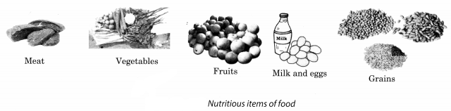

NCERT Solutions for Class 8 Science Chapter 10 Reaching The Age of Adolescence
Topics and Sub Topics in Class 8 Science Chapter 10 Reaching The Age of Adolescence:
| Section Name | Topic Name |
| 10 | Reaching The Age of Adolescence |
| 10.1 | Adolescence and Puberty |
| 10.2 | Changes at Puberty |
| 10.3 | Secondary Sexual Characters |
| 10.4 | Role of Hormones in Initiating Reproductive Function |
| 10.5 | Reproductive Phase of Life in Humans |
| 10.6 | How is the Sex of the Baby Determined? |
| 10.7 | Hormones other than Sex Hormones |
| 10.8 | Role of Hormones in Completing the Life History of Insects and Frogs |
| 10.9 | Reproductive Health |
Reaching the Age of Adolescence Class 8 Science NCERT Textbook Questions
Question 1.
What is the term used for secretions of endocrine glands responsible for changes taking place in the body?
Answer:
Hormones
Question 2.
Define adolescence.
Answer:
The period of life, when the body undergoes changes, leading to reproductive maturity, is called adolescence. The period of adolescence is normally 11 years to 19 years.
Question 3.
What is menstruation? Explain.
Answer:
In females, the ova or eggs begin to mature with the onset of puberty (10 to 12 years of age) one egg get matured and is released by one of the ovaries once in about 28 to 30 days. During this period, the wall of the uterus becomes thick so as to receive the fertilized egg. In case it is fertilized, it begins to develop. This results in pregnancy. If the fertilization fails to take place, the ovum or the released egg and the thickened lining of the uterus along with its blood vessels are shed off. This causes bleeding in women. This is called menstruation. It occurs once in 28 to 30 days.
Question 4.
List changes in the body that take place at puberty.
Answer:
The changes take place differently in the body of boys and girls at puberty. These change may be listed as below:
- There is sudden increase in the height of both boys and girls. However, both reach their maximum height at the age of 17 to 18 years.
- The voice of boys become hoarse and that of girls become shrill.
- Shoulders become broader and muscles grow more prominently in boys. In girls, the regions below the waist becomes wider.
- Hair start growing in different parts of boys and girls.
- In most of the teenagers, due to increased secretion of sweat and sebaceous gland, get acne and pimples on their face.
- Onset of puberty brings changes in secondary sexual characters in both male and female.
- Boys and girls become capable of reproduction.
- In girls, menstruation starts.
- Different types of hormones start to release in initiating a reproductive function.
Question 5.
Prepare a table having two columns depicting names of endocrine glands and hormones secreted by them.
Answer:
| Endocrine glands | Hormones |
| 1. Pituitary gland | (i) Growth hormones |
| 2. Ovaries | (ii) Estrogen |
| 3. Testes | (iii) Testosterone |
| 4. Thyroid | (iv) Thyroxine |
| 5. Pancreas | (v) Insulin |
| 6. Adrenal glands | (vi) Adrenaline |
Question 6.
What are sex hormones? Why are they named so? State their function.
Answer:
The hormones which help and control the formation of secondary sexual characters are called sex hormones. They are named so because they control the sexual activities and are secreted by males and females separately.
Functions of sex hormones are given below separately:
Male sex hormone: It is also called testosterone. It is secreted by testes and causes changes in secondary sexual character of boys like growth of facial hair like moustache, beard, etc. It also stimulates spermatogenesis.
Female sex hormone: It is also called estrogen. It is secreted by ovaries and controls the secondary sexual characters in females, appearance of mammary glands, etc. It also maintains pregnancy.
Question 7.
Choose the correct option.
(a) Adolescents should be careful about what they eat, because:
(i) proper diet develops their brains.
(ii) proper diet is needed for the rapid growth taking place in their body.
(iii) adolescents feel hungry all the time.
(iv) taste buds are well developed in teenagers.
(b) Reproductive age in women starts when their:
(i) menstruation starts.
(ii) breasts start developing.
(iii) body weight increases.
(iv) height increases.
(c) The right meal for adolescents consists of:
(i) chips, noodles, coke.
(ii) chapati, dal, vegetables.
(iii) rice, noodles and burger.
(iv) vegetable cutlets, chips and lemon drink.
Answer:
(a) (ii)
(b) (i)
(c) (ii)
Question 8.
Write notes on:
(a) Adam’s apple
(b) Secondary sexual characters.
(c) Sex determination in the unborn baby.
Answer:
(a) Adam’s apple: During puberty, a change in the voice of boys and girls takes place due to increase in the size of the voice box or larynx. In boys, the voice box tends to protrude out on the upper part of the neck, below the chin and is often referred to as Adam’s apple.
(b) Secondary sexual characters: Those characters which are visible more apparently and help in distinguishing a male from a female are called secondary sexual characters. For example, in girls, breasts and in boys, facial hair, i.e., moustache and beard.
(c) Sex determination in the unborn baby: The sex of a child, i.e., whether it is a male or a female is determined at the time of fertilisation when a male gametes fuse with a female gamete. All human beings have 23 pairs of chromosomes in the nuclei of their cells. Two chromosomes out of these are sex chromosomes. A female has two X chromosomes, while a male has one X and one Y chromosome. The gametes (egg and sperm) have only one set of chromosomes. The unfertilised egg always has one X chromosome.
But sperms are of two kinds—One having X chromosome, and the other having Y chromosome. When a sperm containing X chromosome fertilises the egg, the zygote would have two X chromosomes and develop into a female child. If the sperm contributes a Y chromosome to the egg or ovum at fertilisation, the zygote would develop into a male child. It is thus also clear that the sex chromosomes of the father determine the sex of an unborn baby.
Question 9.
Word game: Use the clues to work out the words.
Across:
3. Protruding voice box in boys
4. Glands without ducts
7. Endocrine gland attached to brain
8. Secretion of endocrine glands
9. Pancreatic hormone
10. Female hormone
Down:
1. Male hormone
2. Secretes thyroxine
3. Another term for teenage
5. Hormone reaches here through blood stream
6. Voice box
7. Term for changes at adolescence
Answer:
Question 10.
The table below shows the data on likely heights of boys and girls as they grow in age. Draw graphs showing height and age for both boys and girls on the same graph paper. What conclusions can be drawn from these graphs?
| Age (Years) | Height (cm) | |
| Boys | Girls | |
| 0 | 53 | 53 |
| 4 | 96 | 92 |
| 8 | 114 | 110 |
| 12 | 129 | 133 |
| 16 | 150 | 150 |
| 20 | 173 | 165 |
Answer:
From the above graph, we conclude that initially boys grow faster than girls from 0-8 years, and girls grow faster than boys from 8-16 years. But both reach their maximum height at the age of 20. Here boys show a greater increase in height than girls.
Reaching the Age of Adolescence Class 8 Science NCERT Intext Activities Solved
Activity 1 (NCERT Textbook, Page 114)
The following chart gives the average rate of growth in height of boys and girls with age. The figures in columns 2 and 3, give the percentage of the height a person has reached at the age given in column 1. For example, by the age 11, a boy has reached 81 % of this probable full height, while a girl has reached 88% of her full height. These figures are only representative and there may be individual variations.
Use the Table for your friends and work out how tall they are likely to be. Find out who is likely to be the tallest and who might be the shortest in your class.
| Age in Years | % of full height | |
| Boys | Girls | |
| 8 | 72% | 77% |
| 9 | 75% | 81% |
| 10 | 78% | 84% |
| 11 | 81% | 88% |
| 12 | 84% | 91% |
| 13 | 88% | 95% |
| 14 | 92% | 98% |
| 15 | 95% | 99% |
| 16 | 98% | 99.5% |
| 17 | 99% | 100% |
| 18 | 100% | 100% |
Activity 2 (NCERT Textbook, Page 115)Calculation for full height (cm) = \(\frac { Present\quad height(cm) }{ percentage\quad of\quad full\quad height\quad at\quad this\quad age } \times 100\) (as given in the chart)
Example: A boy is 9 years old and 120 cm tall. At the end of the growth period he is likely to be \(\frac { 120 }{ 75 } \times 100\) = 160 cm tall
Solution:
Students are suggested to find out the tallest and the shortest boy in their class, using the table shown above. Using the formula you can calculate your present height.
Use the data given in Activity 10.1 to draw a graph. Take age on the X-axis and per cent growth in height on the Y-axis. Highlight the point representing your age on the graph. Find out the percentage of height you have already reached. Calculate the height you might eventually reach. Tally your graph with the one given here (Fig. 10.2).
Solution:
You will notice that initially, girls grow faster than boys but by about 18 years of age, both reach their maximum height. The rate of growth in height varies in different individuals. Some may grow suddenly at puberty and then slow down, while others may grow gradually.
Activity 3 (NCERT Textbook, Page 120)
Collect information from magazines or from doctors and prepare a note on the importance of consuming iodised salt. You can also look for this information on the internet.
Solution:
Iodine is necessary for the thyroid gland to produce thyroxine hormone. It regulates the metabolism of carbohydrates, fats and proteins, so as to produce the best balance for the growth. Deficiency of iodine in our diet leads to reduction in the formation of thyroxine hormone causing goitre disease.
Activity 4 (NCERT Textbook, Page 121)
Make a group with your friends. Write down the items of food in your breakfast, lunch and dinner you had on the previous day. Identify the items responsible for proper growth. Also identify the junk food that you consumed the previous day.
Solution:
Do it yourself.
Activity 5 (NCERT Textbook, Page 121)
Get ideas from the pictures given in Fig. 10.3. Prepare charts or posters and paste them in the class so that you are aware of the diet for adolescents. You may use your creative ideas and present it like an advertisement. You may even organise a competition on this topic.

Solution:
You have already studied about food and its components and you are aware of the importance of various ingredients of food like vitamins, proteins, carbohydrates, fats, minerals, water, etc. So you can do this activity yourself.
Activity 6 (NCERT Textbook, Page 122)
Collect data on the number of children in your class who exercise regularly and who do not exercise regularly. Did you notice any difference in their fitness and health? Prepare a report on the benefits of regular exercise.
Solution:
Doing exercises daily keeps one fit and healthy. It is a popular saying that a sound mind resides in a sound body’, i.e., if you are healthy or physically fit, you are mentally sound also.
You can collect data on the number of children in your class who do exercise regularly and who do not. You will notice the difference clearly in their fitness and health. Also, prepare a note on the benefits of regular exercise.
NCERT Solutions for Class 8 Science Chapter 10 – 1 Mark Questions and Answers
Question 1.
What is the other name for duct gland ?
Answer:
Exocrine glands.
Question 2.
Name two duct glands.
Answer:
Tear glands and sweat glands.
Question 3.
What are ductless glands ?
Answer:
Ductless glands are those glands, from which the hormones are directly poured into the blood.
Question 4.
Name any two ductless glands.
Answer:
Pituitary gland and thyroid gland.
Question 5.
Define hormones. [NCT2010]
Answer:
Hormones are secretions from endocrine glands.
Question 6.
Name a gland whose size gets reduced as the child grows older.
Answer:
Thymus gland.
Question 7.
Name the hormone secreted by
- adrenal gland
- pancreas.
Answer:
- Adrenalin
- Insulin.
Question 8.
Which gland secretes the hormone thyroxine ?
Answer:
Thyroid gland.
Question 9.
Which gland is known as the master gland ?
Answer:
Pituitary gland.
Question 10.
Name the female sex hormone and where is it produced ?
Answer:
Estrogen is produced in the ovary.
Question 11.
Name the male sex hormone and where is it produced ?
Answer:
Testosterone is produced in the testes.
Question 12.
What is the main function of the sex hormones ?
Answer:
The main function of sex hormones is to control sexual characteristics.
Question 13.
Name the sex glands in male and female.
Answer:
The sex glands are testes in male and ovaries in female.
Question 14.
Apart from estrogen, name the other female hormone secreted by ovaries.
Answer:
Progesterone.
Question 15.
Which gland is responsible for the fatness in the body ?
Answer:
Thyroid gland.
Question 16.
Which hormone causes sweating under fear ?
Answer:
Adrenalin.
Question 17.
What do you understand by puberty ?
Answer:
The age at which girls and boys attain reproductive maturity is known as puberty.
Question 18.
Which is the age of adolescence ?
Answer:
The period of development from childhood to womanhood or manhood is the period of adolescence.
Question 19.
Where are hormones made in the human body ?
Answer:
Endocrine or ductless glands.
Question 20.
What is menarche ?
Answer:
The first menstrual flow is known as menarche.
Question 21.
Which is the prescribed marriageable age for boys and girls ?
Answer:
Marriageable age for girls is 18 years and for boys is 21 years.
Question 22.
Which gland activates all other endocrine glands ?
Answer:
Pituitary gland.
Question 23.
When does puberty end ?
Answer:
Puberty ends when an adolescent reaches reproductive maturity.
Question 24.
What is menopause ?
Answer:
Menopause is the stoppage of menstruation in woman.
Question 25.
At which age does menopause takes place ?
Answer:
Menopause normally takes place between 45 to 50 years.
Question 26.
Name a gland which is exocrine as well as endocrine gland.
Answer:
Pancreas.
Question 27.
How many chromosomes are present in each cell of humans ?
Answer:
23 pairs, i.e., 46.
Question 28.
How many chromosomes are present in the nucleus of a single sperm ?
Answer:
23 chromosomes.
Question 29.
How many chromosomes are present in the nucleus of a single egg ?
Answer:
23 chromosomes.
Question 30.
Do all the eggs carry similar set of chromosomes ?
Answer:
Yes, all eggs carry X – chromosomes.
Question 31.
Do all the sperms carry similar set of chromosomes ?
Answer:
No, in some sperms 23rd chromosomes may be an X- chromosome and in some it may be a Y chromosome.
Question 32.
What are twins ?
Answer:
Twins are two babies from a mother taking birth at the same time.
Question 33.
What is the term used for secretions of endocrine glands responsible for changes taking place in the body? [NCERT]
Answer:
Sex glands.
Question 34.
Define adolescence. [NCERT]
Answer:
The period of development from childhood to womenhood or manhood is the period of adolescence.
Question 35.
Choose the correct option : [NCERT]
- Adolescents should be careful about what they eat, because
- proper diet develops their brains.
- proper diet is needed for the rapid growth taking place in their body.
- adolescents feel hungry all the time.
- taste buds are well developed in teenagers.
- Reproductive age in women starts when their
- menstruation starts.
- breasts start developing.
- body weight increases.
- height increases.
- The right meal for adolescents consists of
- chips, noodles, coke.
- chapati, dal, vegetables.
- rice, noodles and burger.
- vegetable cutlets, chips and lemon drink.
Answer:
- proper diet is needed for the rapid growth taking place in their body.
- menstruation starts.
- chapati, dal, vegetables.
Question 36.
Expand AIDS.
Answer:
Acquired Immuno Deficiency Syndrome.
Question 37.
What name is given to adolescents in their teens ?
Answer:
Teenagers.
Question 38.
What name is given to the period when a person is neither a child nor an adult ?
Answer:
Teens.
Question 39.
Does the height of a person depend on his parents ?
Answer:
Yes, the height of a person depends on the genes inherited from his parents.
Question 40.
Why does a person look tall at puberty ?
Answer:
At puberty, the bones of .the arms and legs elongate and make a person tall.
NCERT Solutions for Class 8 Science Chapter 10 – 2 Mark Questions and Answers
Question 1.
Give the right word for : [NCT 2005]
- A hormone that helps in reproduction.
- A gland in the neck, which when swollen causes goitre.
- A hormone which helps to balance the suger in the body.
- An element without which thyroxine hormone is not formed. .
Answer:
- Gonadotropin
- Thyroid
- Insulin
- Iodine
Question 2.
Distinguish between exocrine and endocrine glands.
Answer:
Distinguish between exocrine and endocrine glands :
| Exocrine Glands | Endocrine Glands |
| (a) They secrete enzymes which come out through ducts. (b) e.g., salivary gland |
(a) They secrete hormones which are pushed directly into the blood. (b) e.g., adrenal gland. |
Question 3.
Name the glands
- which secrete juices
- which secrete hormones.
Give one example in each case.
Answer:
- Exocrine glands, e.g., liver secretes bile.
- Endocrine glands, e.g., adrenal gland.
Question 4.
Why should adolescents eat a balanced diet ?
Answer:
A balanced diet during adolescence helps in proper development of reproductive organs and a beautiful body.
Question 5.
What is “female foeticide” ?
Answer:
Killing of the female foetus in the mother’s womb is known as female foeticide.
Question 6.
Which is the main change in boys at puberty ?
Answer:
The most obvious change in body is the sudden increase in height. The person looks tall because the bones of the legs and arms suddenly become long.
Question 7.
What do you think is the main difference in the boys and girls of your class ?
Answer:
In girls, there is more growth in the body parts below the waist. The boys have wider chest and shoulders.
Question 8.
What is the difference in the voice of boys and girls during adolescence ?
Answer:
The voice of boys becomes hoarse and deep but the voice of girls become shrill but sweet during adolescence.
Question 9.
What is the difference in the reproductive activity of male and female humans ?
Answer:
In male humans the reproductive activity is from puberty to 60 or 70 years.
In female humans the reproductive activity is from puberty to 45 to 50 years.
Question 10.
What do you understand by X and Y chromosomes ?
Answer:
X chromosomes stand for female characters and Y chromosomes for male characters.
Question 11.
- What will be the sex of the baby developing from XX zygote ?
- What will be the sex of the baby developing from XY zygote ?
Answer:
- Female baby.
- Male baby.
NCERT Solutions for Class 8 Science Chapter 10 – 3 Mark Questions and Answers
Question 1.
Name the hormones secreted by pancreas. Give function of each secretion.
Answer:
Glucagon and insulin are secreted by pancreas.
- Glucagon which helps to break down glycogen in liver to raise blood glucose level.
- Insulin which helps to reduce blood glucose level and maintains the sugar level.
Question 2.
A mother is angry at her child for misbehaving. The child is also afraid of scolding. Which hormones would be released in both their bodies ? What will be the effect of the hormone ?
Answer:
When the mother is angry and the child is afraid more adrenalin would be released from the adrenal gland. Due to this there will be heavy sweating and lowering of body temperature.
Question 3.
Name the endocrine gland and the hormone which
- maintain calcium in the blood.
- regulate calcium in the body.
- regulate menstrual cycle.
Answer:
Gland Hormone
Thyroid Calcitonin
Parathyroid Parathyroid Hormone
Ovaries Progesterone.
Question 4.
Give one similarity and one difference in the secondary sex characters developed in boys and girl.
Answer:
Similarity : In both boys and girls hair start to grow in arm pits and the pubic region above the thighs.
Difference : In boys, moustaches and beard appear due to growth of facial hair.
In girls, the breast develop and menstrual cycle starts.
Question 5.
What is the function of Follicle Stimulating Hormone (FSH) from pituitary ?
Answer:
The function of FSH is
- to make the testes release testosterone hormone to initiate the formation of sperms.
- to make the ova mature in the ovaries and prepare the uterus to receive the zygote.
Question 6.
- Why is menstruation also known as ‘period’ ?
- What is menarche ?
- What is menopause ?
Answer:
- Since menstruation occurs once in about 28 to 30 days it is known as‘period’or menstrual cycle.
- The first menstrual cycle is known as menarche.
- The stage in the life of a woman when the menstruation stops.
Question 7.
Why should adolescents avoid sexual contact ?
Answer:
Sexual contact by adolescents should be avoided because :
- to avoid unwanted pregnancies.
- to avoid getting HIV (AIDS) infection or any other sexually transmitted disease.
- the responsibilities of parenthood should only be taken when you are settled in life.
Question 8.
What circumstances led to female foeticide being illegal ?
Answer:
In our country female foeticide is illegal because the female population is decreasing. In Indian society, girls are considered a burden. Lot of expenditure is incurred as dowry on girls marriage. Also due to ill treatment by family members, many social groups kill their daughters.
Question 9.
How are identical twins formed ? Why are identical twins always of the same sex ?
Answer:
Identical twins come from the same ovum. After fertilisation the zygote splits into two, each developing into an independent baby. Therefore, these twins are identical and are of the same sex.
Question 10.
One of the paternal twins may be a girl and the other may be a boy. Why ?
Answer:
Paternal twins are not of the same sex. They are a result of double fertilisation — fertilisation of two ova from two sperms.
Question 11.
Show diagrammatically how the sex of the child is determined ?
Answer:
Question 12.
What is menstruation ? Explain.
Answer:
Before a zygote is received in the uterus, the uterus wall becomes thick with a lining of soft and spongy tissue full of blood vessels. In case fertilisation does not take place, the ovum along with the lining and blood vessels along the uterus wall shed off. This results in bleeding in women which continues for 2 to 3 days. This is called menstruation.
Question 13.
Calculate the full height of Esha 8 years old and 110 cm tall at the end of the growth period. (% of full height at this age = 77%).
Answer:
Full height in cm = (Present height (cm)*100) / % of full height at this age
Full height in cm = (110*100) / 77
Full height = = 142 6/2 cm.
NCERT Solutions for Class 8 Science Chapter 10 – 5 Mark Questions and Answers
Question 1.
Give the similar changes taking place in both boys and girls during adolescence.
Answer:
The following changes take place both in boys and girls :
- Increase in height.
- Better development of muscles.
- Change in body shape.
- More of sweating.
- More secretion from sweat glands.
Question 2.
How should the adolescents take care of their health ?
Answer:
During adolescence one should take care of personal health and hygiene.
- Physical exercise should be taken.
- Personal hygiene should be maintained by taking bath daily.
- Proper nutrition should be taken by eating balanced diet.
- Drugs and smoking should be avoided.
- Sexual contact of any kind should be avoided.
Question 3.
Give some myths about sex life prevailing in our society ?
Answer:
- Girls are not as intelligent as boys.
- Loss of semen is the loss of energy.
- A girl should not handle food duration menstruation.
- The mother is responsible for the sex of her child.
- Just by touching a boy, the girl will get pregnant.
Question 4.
Explain how menstruation takes place.
Answer:
Before a zygote is received in the uterus, the uterus wall becomes thick with a lining of soft and spongy tissue full of blood vessels. This is to receive the zygote. If the fertilisation does not take place, the ovum along with lining and the blood vessels along the uterus wall shed off. This results in bleeding in women which continues for 2 or 3 days. This is known as menstruation.
Question 5.
Name the six endocrine glands. Where is each gland located ?
Answer:
Name of gland Position in the body
- Pituitary gland beneath the brain.
- Thyroid gland on the windpipe.
- Parathyroid gland on the larynx.
- Adrenal gland one on each kidney.
- Pancreas near the intestines.
- Sex gland testes in males and ovaries in females.
Question 6.
Why is population control important ?
Answer:
Controlling the growth of population is important because it is difficult to provide food, shelter and other necessities of life for a large population. If the population is high the poverty cannot be removed from the country. To improve the economic standard of a country it is important to control the population.
Question 7.
How can the population be controlled ?
Answer:
Population can be controlled by controlling the number of pregnancies. Many methods have been developed to avoid the sperm cells from meeting the ovum. A large number of family welfare centres have been set-up to educate the people on family planning. They also educate the people on various methods of birth control and safe sex.
Question 8.
What are the reasons for increase in population ?
Answer:
- Ignorance — many people do not know the various methods available.
- Traditional beliefs — many people think children are the gift of God.
- Economic reasons — poor people think children are helping hands to increase the income of the family.
- Mortality rate — the number of children dying among poor people is more, so they tend to have more children.
Question 9.
List changes in the body that take place at puberty. [NCERT]
Answer:
- Increased height.
- Better development of muscles.
- Change in body shape.
- Change in voice.
- More sweating from sweat glands.
- More secretions from oil glands.
- Development of secondary sex characters.
- Attainment of mental, intellectual and emotional stability.
Question 10.
Prepare a table having two columns depicting names of endocrine glands and hormones secreted by them. [NCERT]
Answer:
Endocrine Gland Hormone
- Pituitary Gland Growth hormone
- Thyroid Gland Thyroxine and calcitonin
- Parathyroid Gland Parathyroid hormone
- Adrenal Gland Adrenalin
- Pancreas Glucagon and insulin
- Sex Glands Sex hormones – testosterone, oestrogen and progesterone.
Question 11.
Write notes on : [NCERT]
- Adam’s apple
- Secondary sexual characters
- Sex determination in the unborn baby.
Answer:
- In boys the voice changes due to better growth of larynx, which protrudes on the throat forming Adam’s apple. Thus, the voice becomes deep and hoarse.
- Secondary sex characters develop-
- In both, boys and girls, hair starts growing in arm pits and the pubic region.
- In boys moustache and beard appear. In girls, oestrogen makes the breasts develop with milk secreting glands inside.
- The sex of the baby is determined by the XX and XY chromosomes in a zygote. X chromosome stands for female and Y chromosome for male character. When X and X chromosomes form zygote (XX) the baby is female. When X and Y chromosomes form zygote (XY) the baby is male.
Question 12.
“Say ‘No’ to drugs”. Comment.
Answer:
During adolescence children may feel insecure at times. Then they may feel like taking drugs. They should not take them’until prescribed by a doctor. The child can be addicted to drugs which may harm his health – both physical and sexual.
Question 13.
Give some ways in which AIDS can be transmitted.
Answer:
AIDS can be transmitted by-
- Sexual contact with another HIV infected person.
- Using syringes already used by infected person.
- Through the milk of the infected mother to the infant.
NCERT Solutions for Class 8 Science Chapter 10 MCQs
Question 1.
The spurt in physical growth is evident in girls between [NCERT]
(a) 11-13 years
(b) 13-15 years
(c) 15-17 years
(d) 17-19 years
Answer:
(b)
Question 2.
An adolescent covers individuals from
(a) 5-10 years
(b) 12-18 years
(c) 10-15 years
(d) 10-20 years
Answer:
(a)
Question 3.
Adam’s apple is observed in
(a) boys
(b) girls
(c) both boys and girls
(d) none of these
Answer:
(a)
Question 4.
Testosterone in boys is produce from secretion of
(a) adrenal gland
(b) pituitary gland
(c) thyroid gland
(d) parathyroid gland
Answer:
(b)
Question 5.
In amphibians, metamorphosis is done by
(a) thyroid gland
(b) adrenal gland
(c) pituitary gland
(d) pineal gland
Answer:
(a)
Question 6.
Once a girl starts menstruating, her body needs more
(a) iron
(b) calcium
(c) Vitamin C
(d) Vitamin A
Answer:
(a)
Question 7.
If an adolescent does not eat sufficient fresh fruits and vegetables, he will be deficient in
(a) vitamin A
(b) vitamin D
(c) vitamin C
(d) vitamin B-complex
Answer:
(c)
Question 8.
One ovum is released in females once in every
(a) 28 days
(b) 38 days
(c) 18 days
(d) 08 days
Answer:
(a)
Question 9.
Pituitary gland secretes which hormone from ovaries in girls
(a) testosterone
(b) estrogen
(c) insulin
(d) thyroxine
Answer:
(b)
Question 10.
When we are under stress or angry, the hormone which helps us to adjust, is
(a) insulin
(b) adrenaline
(c) thyroxine
(d) none of these
Answer:
(b)
More CBSE Class 8 Study Material
- NCERT Solutions for Class 8 Maths
- NCERT Solutions for Class 8 Science
- NCERT Solutions for Class 8 Social Science
- NCERT Solutions for Class 8 English
- NCERT Solutions for Class 8 English Honeydew
- NCERT Solutions for Class 8 English It So Happened
- NCERT Solutions for Class 8 Hindi
- NCERT Solutions for Class 8 Sanskrit
- NCERT Solutions